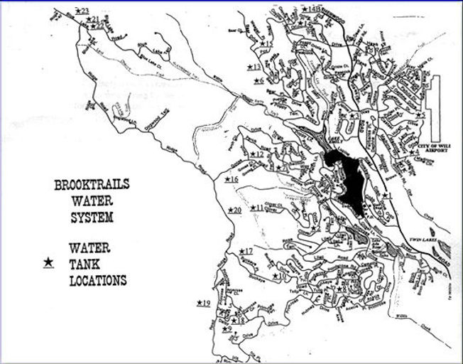

Start with the district
Before grading, tree cutting, or construction, contact Township staff and review the Brooktrails standards.
Prepare your plan
Use the development standards, application packet, and construction water-meter materials.
Coordinate county review
Projects also require the applicable Mendocino County Planning & Building Services approval.
Development review
Plan first, then build.
Brooktrails properties are subject to development standards and a review process consistent with the Brooktrails Specific Plan adopted by Mendocino County. Township staff, and the District Architect when required, evaluate proposed plans.
The district and county jointly administer the Brooktrails Specific Plan and its 2004 amendments.
Contact the Township officeLong-range planning
Growth, water & a second access road.
The district describes its planning authority as a response to water-right and growth questions raised in the late 1980s. A second access road has remained an important planning element, with alternative-route work presented in 2009 and funding limitations reported in 2013.
Historical planning records remain available in the document center so current decisions can be read in context.
Browse planning records →